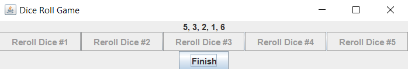

This code snippet features a basic Java project that uses a JFrame.
This assignment originally only required the use of a JOptionPane. However, I decided to challenge myself and obtained permission to create my own GUI for the application.
This description will primarily focus on the creation of the JFrame.
When creating the application, I focused on building and attaching functionality to the custom dialog.
I used the the GridBagLayout as a starting point to place one label and six buttons consisting of five "dice roll" buttons and one exit button using relative positioning.
I then added various action listeners for the buttons to represent their functions, which showed the simulation of a dice roll.
After the general layout was established, I added the layout into a JPanel, which would then be compiled into a visible GUI.
Working with Java's Swing API proved to be a difficult but fulfilling challenge for me.
It offered an in-depth look at how GUIs are constructed at a code level, which was a stark contrast to Visual Studio's relatively easy to create forms.
Taking on this challenge required me to learn how positioning works on a specific dialog box size, and not being able to view the result as I placed components without running the code was time-consuming.
I often found myself having trouble with the components not appearing on the dialog (usually the result of the component being outside the dialog view) or appearing in the incorrect locations.
 Project Repository
Project RepositoryAn example of the custom dialog, showcasing six buttons and five labels.

An example of the custom dialog with disabled buttons, activated when each button is clicked three times.
Notice how the labels have changed from repeated clicks.